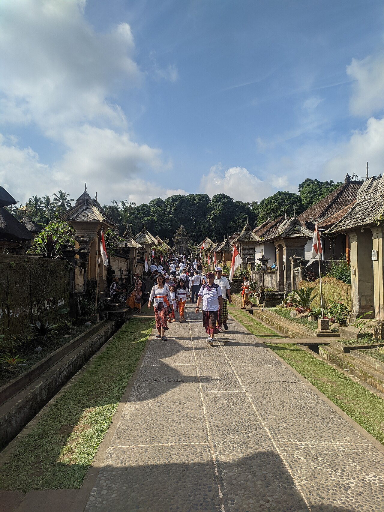
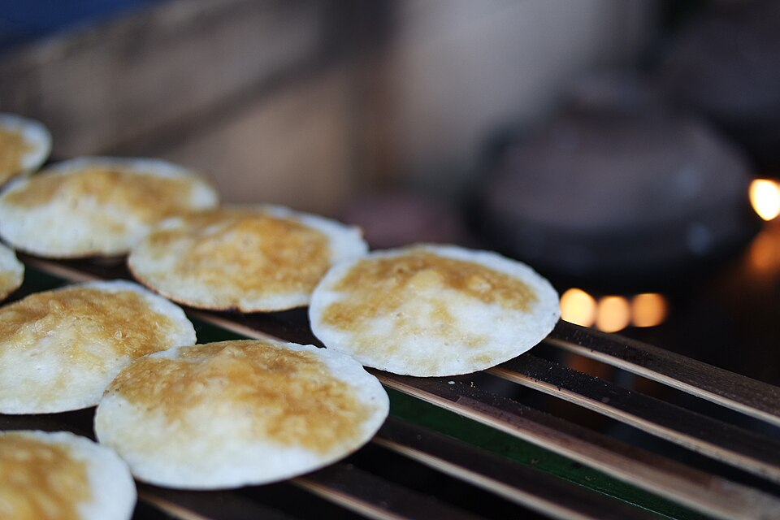

Menginap di rumah warga
Pilih rumah, lalu tanggal masuk dan keluar. Malam yang penuh tidak bisa dipilih. Harga dan total dihitung otomatis.

Makan seperti warga
Warung Bu Sari buka pukul 07.00 sampai 17.00, kecuali hari raya. Berasnya dari sawah desa, sayurnya dari kebun di belakang warung.
Bandingkan penginapan
Semua rumah dimiliki dan dirawat langsung oleh warga.
| Rumah | Tamu | Kamar mandi | Sarapan | Paling cocok untuk |
|---|---|---|---|---|
| Rumah Pak Made | 4 orang | Dalam, air hangat | Rp 25.000 | Pasangan dan keluarga kecil |
| Rumah Bu Ketut | 6 orang | Dua, di dalam | Termasuk | Keluarga besar |
| Pondok Tepi Sawah | 2 orang | Semi terbuka | Rp 25.000 | Berdua, suka suasana tenang |
| Rumah Rombongan Sanggar | 12 orang | Tiga, bersama | Rp 20.000 | Sekolah dan komunitas |
Malam dan pagi di rumah warga

Desa sudah sepi sejak pukul 21.00. Tuan rumah biasanya masih duduk di teras dan senang diajak mengobrol. Pagi-pagi, suara ayam dan orang menyapu halaman akan membangunkan Anda.
- Pukul 05.30, warga mulai berangkat ke sawah
- Pukul 07.00, sarapan disajikan di teras
- Pukul 11.00, batas waktu keluar rumah
Yang perlu diketahui
Kebersihan
Handuk dan sabun tersedia. Sprei diganti tiap dua malam atau saat diminta.
Jam tenang
Mohon tidak bersuara keras setelah pukul 22.00, karena warga mulai bekerja sejak subuh.
Pembayaran
Bayar uang muka 30 persen lewat pengelola, sisanya saat tiba secara tunai atau QRIS.
Pembatalan
Uang muka kembali penuh jika dibatalkan lebih dari tiga hari sebelum datang.
Serangga
Bawa losion antinyamuk. Kelambu tersedia di semua kamar.
Listrik dan Wi-Fi
Listrik tersedia sepanjang hari. Wi-Fi hanya ada di balai wisata.
Tempat makan lainnya
Selain Warung Bu Sari, ada beberapa dapur warga yang buka untuk tamu.

- Dapur Bu NyomanLawar dan sate lilit, pesan sehari sebelumnyaRp 30.000
- Kedai Kopi SubakKopi tubruk dan pisang goreng, 15.00 sampai 21.00Rp 15.000
- Serabi Pagi Mbok RaiDi depan pura, 06.00 sampai habisRp 8.000
Siap memesan?
Pesan minimal tiga hari sebelumnya agar tuan rumah bisa bersiap.